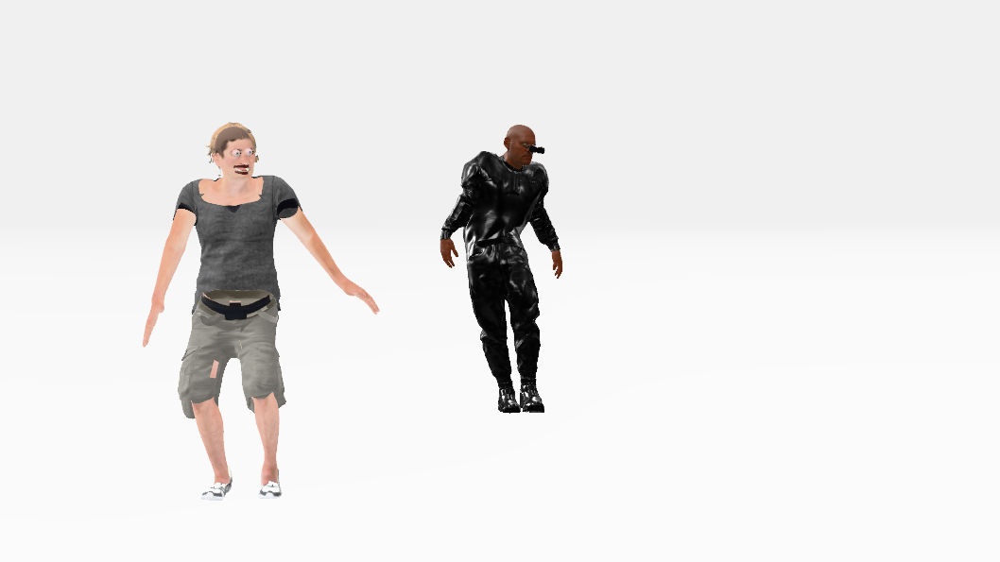
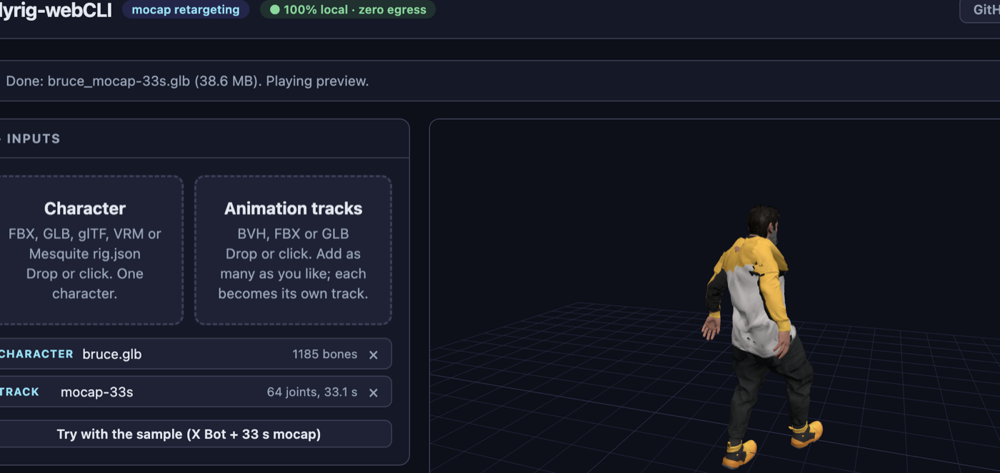

Dance in the Construct
Two dancers, one white void. Morpheus starts a dance; Remy picks it up three seconds later and copies it move for move, while a camera swings around so you see their faces for most of it. The characters are rigged and animated outside Strata with bodyrig-webCLI — it retargets one motion onto any skeleton and writes a single GLB with the animation baked in — then Strata dresses, stages and renders them. Open the editor, open the Shell tab, and paste each block in order.

1 Download Remy from Mixamo
Remy is a stock Mixamo character, so he comes with the standard mixamorig skeleton that bodyrig-webCLI already knows how to map.
- Go to mixamo.com and sign in with your Adobe ID (free).
- Open the Characters tab and pick Remy.
- Press Download. Choose format FBX Binary (.fbx) and pose T-pose, then download and save the file as
remy.fbx.
Mixamo's menus change from time to time, so the labels above may read a little differently — what matters is a rigged Remy as an .fbx in a T-pose.
2 Get Bruce
Bruce is already a GLB, hosted by the metahuman-to-glb demo. Save it from your browser or with curl (it is about 80 MB):
curl -L -o bruce.glb https://creategamecharacters.github.io/metahuman-to-glb/5.7/characters/bruce/bruce.glb3 Bake the dance onto both with bodyrig-webCLI
Open tejaswigowda.com/bodyrig-webCLI (or clone the repo and run npm start for a local copy at http://127.0.0.1:8010). It is a static page: the badge in the header reads 100% local · zero egress, and you can confirm in DevTools' Network tab that your files never leave the machine.
- Drop
remy.fbxon the Character zone, andmocap-33s.bvhon Animation tracks. Both appear as chips (the motion reports its joint count and duration). - The page bakes as soon as it has a character and a motion; the status bar ends with Done: remy_mocap-33s.glb and a live preview plays. To re-bake after changing an option, press Bake & export GLB.
- Press Download GLB to save
remy_mocap-33s.glb. - Swap the character: click the × on its chip, drop
bruce.glbinstead (leave the same motion loaded), and downloadbruce_mocap-33s.glbthe same way.

Because both characters were baked from the same motion file, the animation clip in each GLB has the same name, mocap-33s, and the same 33.1-second length — which is exactly what lets Remy copy Morpheus later with a plain time offset.
bake --fps 30 is what the button runs. Useful flags are --foot-lock (pin planted feet with IK), --loop (close the cycle), --in-place and --trim 2:20 (seconds). Run help to see them all. For a MetaHuman, leave Align reference pose ticked — it is what makes the A-pose Bruce and the T-pose Remy follow the same motion.http://tejaswigowda.com/bodyrig-webCLI/?character=<bruce URL>&motion=<motion URL>&run=bake (URL-encode the two values). Add --hide Outfits to the command to leave the clothes out of the bake if you only want the bare body.The GLBs are meshopt-compressed to keep them small (Bruce comes out near 39 MB, down from about 80 MB). Strata's loader already includes the meshopt decoder, so nothing extra is needed; tick off Meshopt compress only if you plan to open the file in a tool that lacks it.
4 Import both into Strata
Use File → Import (or drag both files onto the editor window). A progress banner tracks each file while it is read and parsed. When the Import glTF dialog appears, leave the compression options off — Strata skips mesh simplification on skinned and morph-target meshes anyway, and rigged characters don't benefit from it — and press OK.
Then check what arrived in the Shell:
scene.children.map(o => o.name); // ['bruce_mocap-33s.glb', 'remy_mocap-33s.glb']
scene.animations.map(a => a.name); // ['mocap-33s', 'mocap-33s']Give them short names to address them by, and measure each character so you know whether the scale is sane — Mixamo exports are in centimetres, so Remy may come in tiny or huge depending on how the FBX was read:
const bruce = scene.children.find(o => o.name.startsWith('bruce'));
const remy = scene.children.find(o => o.name.startsWith('remy'));
relabel(bruce, 'morpheus'); // Bruce becomes #morpheus
relabel(remy, 'remy'); // Remy becomes #remy
for (const [n, o] of [['morpheus', bruce], ['remy', remy]]) {
const h = new THREE.Box3().setFromObject(o).getSize(new THREE.Vector3()).y;
console.log(n, 'is', h.toFixed(2), 'm tall'); // aim for roughly 1.7–1.9
}If Remy is off, scale his group so he stands about as tall as Bruce — one command, undoable:
const k = 1.8 / new THREE.Box3().setFromObject(remy).getSize(new THREE.Vector3()).y;
editor.execute(new SetScaleCommand(editor, remy, remy.scale.clone().multiplyScalar(k)));5 Turn Bruce into Morpheus
Strata ships a Morpheus preset for MetaHuman-style characters. It finds the body, face, hair and outfit parts by mesh and material name (so it works on Bruce, and on the other metahuman-to-glb characters, Ada and Bo), then restyles them:
- takes off the hair, beard and moustache (a bald, clean-shaven head) and retints the skin a warm brown;
- recolours the jacket, trousers and shoes to black leather (building trousers and shoes where a rig only ships shorts);
- adds small black sunglasses, bound to the head so they follow every turn;
- flattens the belly and pelvis where the body sticks out past the chest;
- smooths the outfit's skin weights so the neck and shoulders stay covered when motion capture moves the arms (cloth-simulation weights shred under skinning otherwise);
- tags each part with classes (
.head,.skin,.jacket,.trousers, …) so you can address them with$S().
const { applyMorpheus } = await import(new URL('./editor/js/presets/morpheus.js', document.baseURI).href);
await applyMorpheus(editor);It takes a few seconds (the weight smoothing runs over every outfit vertex). Orbit the viewport to inspect him; running it again replaces the props it added rather than doubling them.
6 Stage the two dancers
Both characters were baked at the origin, so they would dance inside each other. Slide Remy 2.8 m to the side:
editor.execute(new SetPositionCommand(editor, remy, new THREE.Vector3(2.8, 0, 0)));7 Build the Construct
The Construct is a featureless white void: a white background that the floor fades into, light fog to soften the horizon, a glossy white floor for a faint reflection, and two lights.
scene.background = new THREE.Color(0xffffff);
scene.fog = new THREE.Fog(0xffffff, 14, 55);
const floor = new Mesh(new PlaneGeometry(200, 200),
new MeshStandardMaterial({ color: 0xffffff, roughness: 0.12, metalness: 0.1 }));
floor.rotation.x = -Math.PI / 2;
floor.receiveShadow = true;
floor.name = 'Floor';
editor.execute(new AddObjectCommand(editor, floor));
const sky = new THREE.HemisphereLight(0xffffff, 0xdddddd, 1.6);
sky.name = 'Sky';
editor.execute(new AddObjectCommand(editor, sky));
const key = new DirectionalLight(0xffffff, 2.2);
key.position.set(4, 8, 5);
key.castShadow = true;
key.name = 'Key';
editor.execute(new AddObjectCommand(editor, key));8 Play the dance: Morpheus leads, Remy follows
Each imported clip is bound to its own character, so two clips can share a name without clashing — the selector decides whose clip plays. Put Morpheus's on the Universal Timeline at 0 s and Remy's at 3 s:
$S('#morpheus').at(0).play('mocap-33s');
$S('#remy').at(3).play('mocap-33s');Open the Animations tab and scrub: Morpheus starts moving at once, Remy begins three seconds in and repeats the same moves. The whole timeline is 36.1 seconds — the 33.1-second dance plus Remy's 3-second head start.
$S, and rendered identically every time. Retargeting per character is the part that needs a tool; sequencing and staging is what Strata is for.9 Add a camera that orbits the dancers
A static shot from the wrong side shows the back of both heads for most of the song. First, find which way the dance faces: at the playhead around 10 s, orbit the viewport until you see their faces. For the sample motion they face about 150° away from +Z, toward −Z and slightly +X. Build a camera clip that stays on that side and drifts ±35° around it with a slow push-in, keyed every half second:
const cam = new PerspectiveCamera(35, 16 / 9, 0.1, 200);
cam.name = 'Construct Camera';
editor.execute(new AddObjectCommand(editor, cam));
relabel(cam, 'construct-camera');
// A camera helper that does the aiming for us. Object3D.lookAt points +Z at the
// target; a camera looks down -Z, so use a camera, not a bare Object3D.
const rig = new PerspectiveCamera();
const center = new THREE.Vector3(1.7, 1.0, 0.7); // between the two dancers
const times = [], pos = [], quat = [];
for (let t = 0; t <= 33; t += 0.5) {
const az = THREE.MathUtils.degToRad(150 + 35 * Math.sin(2 * Math.PI * t / 33));
const r = 8.5 - Math.sin(Math.PI * t / 33); // push in, then ease out
rig.position.set(center.x + r * Math.sin(az), 1.45, center.z + r * Math.cos(az));
rig.lookAt(center);
times.push(t);
pos.push(...rig.position.toArray());
quat.push(...rig.quaternion.toArray());
}
addClip(scene, new THREE.AnimationClip('camera-orbit', 33, [
new THREE.VectorKeyframeTrack(cam.uuid + '.position', times, pos),
new THREE.QuaternionKeyframeTrack(cam.uuid + '.quaternion', times, quat),
]));
$S('#construct-camera').at(0).play('camera-orbit');Track names must be <object uuid>.<property>, which is why the clip is built from cam.uuid. If your dancers face another way, change the 150 (degrees from +Z) and check a few frames with holdTimelineAt:
const { holdTimelineAt } = await import('./editor/js/intelligence/timelineController.js');
holdTimelineAt(editor, 16); // jump the whole scene to t = 16 s
editor.viewportCamera = cam; // look through the new camera
editor.signals.viewportCameraChanged.dispatch();10 Render it
- Open the Render tab. The Snapshot section saves the scene exactly as it is right now, with no grid or gizmos: hold the timeline at a moment you like (
holdTimelineAt(editor, 16)), pick Construct Camera and a size, and press Take Snapshot. - For the video, scroll to Video Render. With no Camera Sequence shots, the render uses the viewport camera, so add one shot at 0 s pointing at Construct Camera (+ Add Shot, then choose the camera). Pick 1280 × 720 at 30 fps and press Render & Export. The whole 36.1-second timeline renders; expect it to take about as long as the clip itself.
- Keep the tab in the foreground while it renders — browsers throttle hidden tabs, which makes frames stall.
To keep the scene, set your repository and token in the Git tab and use Commit Scene. The characters and their baked clips are stored as binary asset files next to a small scene JSON, so the commit is large but not unmanageable (a few dozen megabytes for this scene).
// Sanity-check what you're about to commit
$S('#morpheus').count(); // 1
$S('.skin').count(); // the skin parts the preset tagged
editor.timeline.toJSON().tracks.map(t => t.target); // ['#morpheus', '#remy', '#construct-camera']